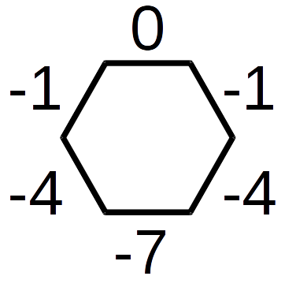
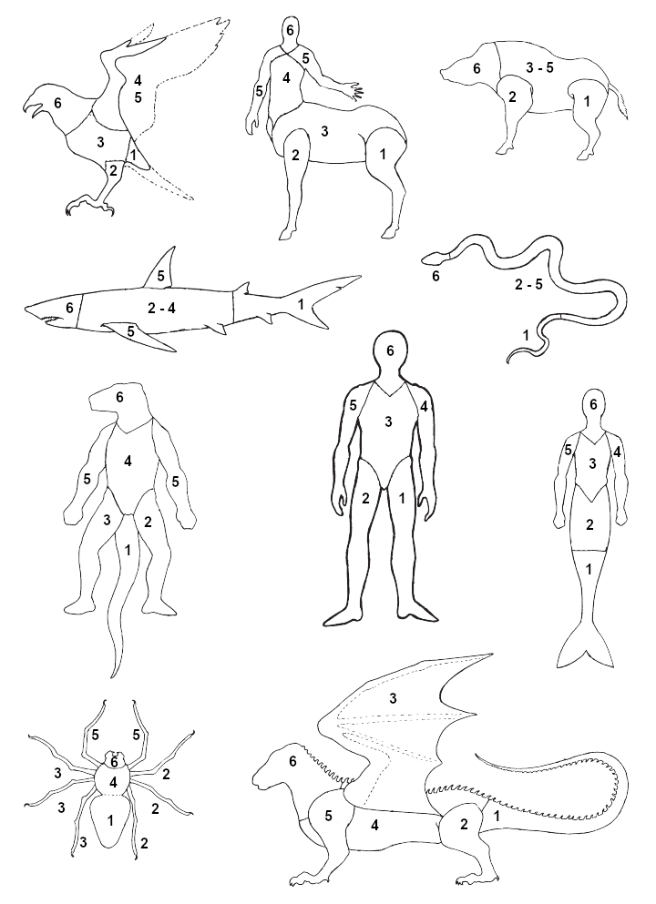

Combat is an essential part of most fantasy. It is a way of solving certain problems in many fantasy books and films. It gives the possibility to play out the valiant knight or the barbarian gladiator.
Melee Combat
Weapons are divided into 6 categories; unarmed (boxing, karate and the like), knives, one-handed weapons, two-handed weapons, polearms and shields. Dodging is an additional defensive skill.
The offensive and defensive modifiers along with the other weapon specifications are shown in the melee weapons table.
In combat a character will have an offensive value and a defensive value. The offensive value is for hitting the opponent and the defensive value is for avoiding getting hit by opponents.
The offensive value with a weapon is: the skill value + the offensive modifier. This total is noted on the character sheet under off.
The defensive value with a weapon is: the skill value + the defensive modifier. This total is noted on the character sheet under def.
Melee Weapons
| Weapon | Type | Strength | Initiative | Off.Mod. | Def.Mod. | Damage | HitPoints | Weight | Length | Radius | Cost |
|---|---|---|---|---|---|---|---|---|---|---|---|
| Bastard sword 1H | 1 Handed | 6 | 6 | 0 | 0 | -1 | 14 | 2.1 | 1.0 | 1.0 | 45 |
| Bastard sword 2H | 2 Handed | 4 | 6 | 0 | +1 | 0 | 14 | 2.1 | 1.0 | 1.2 | 45 |
| Battle axe 1H | 1 Handed | 9 | 5 | -1 | -1 | 1 | 8 | 2.1 | 0.8 | 0.8 | 30 |
| Battle axe 2H | 2 Handed | 5 | 5 | -1 | 0 | 2 | 8 | 2.1 | 0.8 | 1.0 | 30 |
| Broad axe | 1 Handed | 5 | 4 | -1 | -2 | 0 | 8 | 1.6 | 0.6 | 0.6 | 20 |
| Buckler | Shield | 2 | - | N/A | +1 | N/A | 8 | 2.0 | 0.3 | 0.2 | 5 |
| Club | 1 Handed | 4 | 4 | -1 | -2 | -2 | 8 | 1.2 | 0.7 | 0.8 | 3 |
| Dodge | Dodge | 0 | - | N/A | -2 | N/A | N/A | N/A | N/A | 0.0 | N/A |
| Great axe | 2 Handed | 7 | 6 | 0 | +1 | 3 | 10 | 2.6 | 1.2 | 1.4 | 15 |
| Great sword | 2 Handed | 6 | 7 | +1 | +1 | 1 | 16 | 2.4 | 1.2 | 1.4 | 50 |
| Halberd | Polearm | 7 | 7 | 0 | +2 | 1 | 7 | 2.9 | 2.3 | 1.6 | 35 |
| Hatchet | 1 Handed | 3 | 3 | -2 | -3 | -1 | 8 | 1.4 | 0.4 | 0.4 | 10 |
| Heavy mace 1H | 1 Handed | 6 | 4 | 0 | -1 | -1 | 8 | 1.7 | 0.4 | 0.8 | 25 |
| Heavy mace 2H | 2 Handed | 4 | 4 | 0 | 0 | 0 | 8 | 1.7 | 0.4 | 1.0 | 25 |
| Hercules club | 2 Handed | 6 | 7 | 0 | +1 | 2 | 10 | 2.6 | 1.2 | 1.4 | 20 |
| Kite shield | Shield | 6 | - | N/A | +3 | N/A | 12 | 6.0 | 1.3 | 0.6 | 15 |
| Knife | Knife | 1 | 2 | -2 | -3 | -2 | 8 | 0.3 | 0.3 | 0.2 | 5 |
| Light mace | 1 Handed | 3 | 3 | -1 | -2 | -2 | 8 | 1.2 | 0.6 | 0.6 | 15 |
| Longsword | 1 Handed | 4 | 5 | 0 | 0 | -1 | 12 | 1.6 | 0.8 | 0.8 | 25 |
| Rapier | 1 Handed | 2 | 4 | 0 | -1 | -2 | 7 | 0.8 | 1.0 | 0.6 | 35 |
| Round shield | Shield | 4 | - | N/A | +2 | N/A | 10 | 4.0 | 0.8 | 0.4 | 10 |
| Short sword | 1 Handed | 2 | 3 | -1 | -1 | -2 | 12 | 0.9 | 0.6 | 0.4 | 20 |
| Spear 1H | 1 Handed | 4 | 6 | -1 | -4 | -2 | 7 | 1.0 | 1.5 | 0.6 | 10 |
| Spear 2H | Polearm | 4 | 7 | 0 | +2 | -1 | 7 | 1.6 | 2.0 | 1.2 | 12 |
| Staff | Polearm | 3 | 6 | 0 | +2 | -2 | 7 | 1.4 | 1.8 | 1.2 | 6 |
| Unarmed | Unarmed | 0 | 1 | -2 | -4 | -4 | N/A | N/A | N/A | 0.0 | N/A |
Radius
This is the radius needed to fight with the weapon without any penalties. If you are restricted to fight with a lesser radius, you get a -1 penalty (both offensive and defensive values). Fighting within half the radius gives a -3 penalty. Fighting within a quarter of the radius is not possible.
Insufficient Strength
If you have less strength than required for the weapon you are using, the modifiers are as follows: 1 less = -1, 2 less = -3, 3 less = -5. If your strength is more than 3 below the strength requirement you cannot use the weapon.
Using a Weapon in Your Off Hand
If you are using a weapon other than a shield in your off hand you get -3, and the strength requirement is increased by 2.
New Weapons
If a character picks up a weapon he has not had any experience with, he will use his weapon skill of choice with the following modifiers: “same weapon” = -1, same category = -3, other category = -5.
Weapon combinations
A weapon combination (Longsword & Shield, Two Knives, Whip/Buckler) is one skill of its own. It is trained, ranked and marked for experience separately from the solo weapon. The character sheet carries the combination as a single weapon row, with the pair's modifiers folded together (e.g. the sword's values plus the shield's defensive modifier).
Dodging
Dodge is an Athletics skill. It gives +1 in defensive value per full 5 in Dodge skill total.
Sometimes it is better to dodge than to parry, this depends upon your skills, your opponent’s weapons and other circumstances. When purely dodging (forgoing all attacks), your defensive value is your Dodge total - 2.
Hitting opponent's weapon (optional)
If you parry an attack and your defense roll is no more than 5 above your opponent's attack roll, your weapon is hit. The attacker rolls for damage and you subtract your damage bonus + your weapon's defense bonus and apply the remaining damage to you. If the damage is above the weapon's HitPoints, it also breaks.
Armor
The armor table gives the armor points and the move quietly penalty. The values listed are for full suits of armor. When wearing partial or mixed armor, the values are adjusted according to how much is covered, i.e. half a suit of ringed mail gives 1 armor point. The AP is subtracted from the damage before it is applied to the BP.
| Armor | AP | MvQt | Weight | Cost |
|---|---|---|---|---|
| Heavy cloth | 1 | -2 | 4.5 | 10 |
| Leather armor | 1 | -1 | 5.0 | 15 |
| Leather scale | 2 | -3 | 11.0 | 40 |
| Ringed mail | 2 | -1 | 8.0 | 45 |
| Cuir-boullie | 2 | -2 | 12.0 | 50 |
| Cuir-boullie | 3* | -2 | 19.0 | 68 |
| Chain mail | 4* | -4 | 26.0 | 168 |
| Metal scale | 5* | -6 | 30.0 | 318 |
| Helmets | AP | AWARE | Weight | Cost |
|---|---|---|---|---|
| Leather hood | 1 | -1 | 1.0 | 2 |
| Chain hood | 2* | -1 | 2.0 | 18 |
| Open helmet | 3* | -2 | 2.0 | 15 |
| Cask | 4* | -5 | 4.0 | 35 |
*Includes padding
Combat Rounds
A combat round lasts for 6 seconds.
Each opponent makes an initiative roll each round: Start with an action's "Initiative", add the Reaction Speed skill, any modifier and an open ended dice roll. A weapon has an initiative as seen above in the weapons table.
Missiles and magick initiative have these initiative scores:
| Action | Initiative |
|---|---|
| Missile weapons with one or less shots per round | 0 |
| Missile weapons with two shots per round | 5 & 0 ¹ |
| Ready aimed missile weapon | 10 |
| Magick spell | 0 |
| Innate magick | 10 |
¹ Subtract 5 to determine when the second shot gets fired/thrown.
Here are the most common initiative modifiers:
| Action | Initiative modifier |
|---|---|
| Per extra attack that round | -5 |
| Move & Fight | -5 |
| Move | -10 |
| Fast attacking | +1 per -1 in Offensive or Defensive value |
| Fast shooting | +2 per -1 in Offensive value |
A character defends as many times as there are attacks against him. A character who is fighting may not do anything else (like casting spells) that round except move.
Surprise attack
In an ambush, someone sneaking up on another, an archer awaiting an attack in a guard tower etc. will get a Surprise attack before the normal combat rounds start.
Endurance drain in combat (optional)
Each opponent in a combat will get -1 in Status (i,e, -1 to every skill roll) for number of combat rounds equal to its Endurance. Example: A PC has 4 in Endurance, and will get -1 in Status every 4 combat rounds.
Movement in Combat
If you move while fighting, your offensive and defensive values are penalized as described in the table below. The move for humans is 12 m per round (2 m per round in water).
If you move into a combat during a round, you add the number of seconds you move to the second you would normally attack to get the actual second you attack. If this exceeds 6, you do not get an attack that round. The movement in combat is calculated from the Base Move (See Movement and Weather): Movement in combat = 0.4 x Base Move.
| Movement | Move | Off. | Def. |
|---|---|---|---|
| Run | x 2 | -10 | -5 |
| Move | x 1 | -5 | -2 |
| Move & Fight | x 1/2 | -3 | -1 |
| Move in Melee | x 1/4 | -1 | -1 |
| Disengage | x 1 | X | -5 |
If you try to disengage from a fight, your opponent can decide to follow your movement or get one last attack and let you disengage. You can not attack if your opponent lets you disengage. If your opponent insted chooses to follow your movement, then you both end up with a "Move" (-5/-2 with a full movement, 12 m for humans), but you still will not get to attack that round.
You can always move 1m per round without penalties.
The Attack
To see if an attack is successful, roll the dice and add the offensive value. The opponent rolls a dice and adds his defensive value. If the attack is greater than this, a hit is scored.
Damage
The damage equals the damage of the weapon plus the character’s damage bonus. Whenever a hit is scored, roll a dice and add the damage. Subtract any armor points. The result is how much damage you do to your opponent’s BP.
Optional: Whenever you are damaged, you are stunned and have to subtract -1 from your rolls for the rest of the round.
Grapple
To grapple your opponent instead of doing damage, first make an Unarmed attack. If you hit, roll Hit Location (if those rules are in use), roll D + double damage bonus as the Grapple Roll. If your Grapple Roll is higher than you opponents Grapple Roll (D + double damage bonus), then you hold your opponent. Each round thereafter, both character rolls Strength + O6. If the attacker's roll is above the defender's, the grapple continues.
Fighting Several Opponents
If you fight more than one opponent, the illustration below shows how much you subtract from your offensive and defensive against each opponent depending on where each is standing relative to the direction you are facing (0).


Target not Defending
If the target is not defending itself, the attack is rolled against a defensive value of -5.
Special actions (optional)
Fighting Offensively
If you attack like a berserker without much thought for your own safety, you get +3 in offensive value and -5 in defensive.
Power hit
You may attempt to power hit your opponent by adding your damage bonus again while getting -5 in offensive value.
Attacking Earlier
You can attack earlier in the round by subtracting 1 from your offensive value for that attack per 1 added to initiative.
More Than One Attack
You can get more than one attack roll during a combat round by subtracting 5 from your offensive value that round per extra attack. Attack number two takes place in second 6, attack number three in second 5, etc. You may not attack more than once during the same second.
Fighting Defensively
If you mainly try to defend yourself, you get +3 in defensive value and -5 in offensive.
Only defending
By giving up all opprtunities to attack, you gain +5 in defensive value.
Summary of Melee Adjustments
On the melee adjustments table you will find adjustments for several situations.
| Voluntary fighting modifications | |||
| Off | Def | Move | Condition |
| +3 | -5 | x 1 | Fighting offensively |
| -5 | +3 | x 1 | Fighting defensively |
| X | +5 | x 1 | Only defending |
| -5 | +0 | x 1 | Attack one more time in a round |
| -1 | +0 | x 1 | Subtract one from initiative |
| -1 | +0 | x 1 | Remove one Hit Location that you can hit |
| +0 | -1 | x 1 | Remove one Hit Location where you can be hit |
| -1 | -1 | x 1 | Fighting restricted to less than the weapon's required radius |
| -3 | -3 | x 1 | Fighting restricted to less than half the weapon's required radius |
| Motion penalties | |||
| Off | Def | Move | Condition |
| -10 | -5 | x 2 | Run |
| -5 | -2 | x 1 | Move |
| -3 | -1 | x 1/2 | Move & Fight |
| -1 | -1 | x 1/4 | Move in Melee |
| X | -5 | x 1 | Disengage |
| Position penalties | |||
| Off | Def | Move | Condition |
| +0 | -1 | x 1 | Defending against opponent to the left or right |
| +0 | -4 | x 1 | Defending against opponent from behind left or right |
| +0 | -7 | x 1 | Defending against opponent directly from behind |
| +0 | -2 | x 1 | Unable to move backwards |
| -3 | -3 | x 1/10 | Down on knee |
| -5 | -5 | x 1/10 | Down on ground |
| +1 | +0 | x 1 | Fighting from higher ground (like in a stair) |
| -2 | -2 | x 3/4 | Slippery ground |
| Defender's condition penalties | |||
| Off | Def | Move | Condition |
| -2 | -2 | x 3/4 | Half Action (down to 1/2 Body Points) |
| -4 | -4 | x 1/2 | Quarter Action (down to 1/4 Body Points) |
| +0 | -5 | x 1 | Partially unaware |
| -3 | -3 | x 1/2 | Stunned |
| X | -10 | x 1 | Unaware |
| X | (-5) | x 1 | Immobilized (defense is -5 regardless of skills) |
| Lighting | |||
| Off | Def | Move | Condition |
| -1 | -2 | x 3/4 | Twillight / torchlight |
| -2 | -4 | x 1/2 | Moonlight (full moon) |
| -3 | -6 | x 1/4 | Starlight |
| -5 | -10 | x 1/8 | Darkness |
| Weapon adjustments | |||
| Off | Def | Move | Condition |
| 0 | +1 | x 1 | Per full 5 in Dodge skill |
| +1 | +1 | x 1 | Per full 5 in Unarmed skill |
| +1 | +1 | x 1 | Using a secondary weapon |
| -1 | -1 | x 1 | Strength 1 less than required to use weapon |
| -3 | -3 | x 1 | Strength 2 less than required to use weapon |
| -5 | -5 | x 1 | Strength 3 less than required to use weapon |
| -3 | -3 | x 1 | Using weapon in the "off hand" (Strength requirement is +2) |
| -1 | -1 | x 1 | Using a new weapon practically same type as a skilled weapon |
| -3 | -3 | x 1 | Using a new weapon in same category as a skilled weapon |
| -5 | -5 | x 1 | Using a new weapon in other category as a skilled weapon |
All effects are cumulative, but offensive or defensive can never go below -5 total.
An "X" indicates that no attack is possible.
Artificial light sources all have a “radius.” Within this radius the penalties due to light conditions are as for torchlight. Up to 2 times this radius the light is equivalent to moonlight. Up to 4 times the radius the light is equivalent to starlight. A candle has a radius of 1 m, a torch has a radius of 5 m and a lantern has a radius of 7 m. The GM has to use his discretion if there are more than 1 light source.
Missile Combat
For specifications on missile weapons, see the missile weapons table.
The difficulty rating for hitting something up to half the normal range of the weapon is 5.
The DR up to the normal range of the weapon is 10.
Up to twice the normal range of the weapon, the DR is 15.
At maximum range the DR is 20.
When checking for a successful attack, roll the dice and add the skill, the size of the target and any adjustments for a total above the difficulty rating.
These DRs are for an unaware target: one that is surprised, asleep, bound, or holding still on purpose (aiming, casting, climbing). An aware target is harder to hit. Add to the DR, at the target's choice:
- the target's own O6 + (Dodge total − 5), or
- a flat +5 (the target moves unpredictably).
Everyone in a melee counts as aware. Below a Dodge total of 7 the flat +5 is the better choice.
Damage bonus (DB) is never added to missile damage. Bow, crossbow and sling damage in the table below already carries a −1 adjustment: a missile penetrates, but it does not do the damage a sword does.
Missile Weapons
| Weapon | Strength | Off.Mod. | Damage | Range | MaxRange | Shots/round | Weight | Length | Cost |
|---|---|---|---|---|---|---|---|---|---|
| Bow (light) | 2 | 0 | -1 | 30 | 130 | 1 | 0.6 | 1.2 | 15 |
| Bow (medium) | 4 | 0 | 0 | 35 | 160 | 1 | 0.7 | 1.5 | 18 |
| Bow (heavy) | 6 | 0 | 1 | 40 | 190 | 1 | 0.8 | 1.8 | 20 |
| Bow (very heavy) | 10 | 0 | 3 | 50 | 240 | 1 | 1.0 | 2.1 | 35 |
| Bow (giant’s) | 15 | 0 | 5 | 60 | 300 | 1 | 1.2 | 2.4 | 50 |
| Crossbow (light) | 2 | +2 | 0 | 20 | 100 | 1/3 | 3.0 | 0.7 | 30 |
| Crossbow (medium) | 3 | +2 | 1 | 30 | 175 | 1/4 | 4.0 | 0.7 | 40 |
| Crossbow (heavy) | 4 | +2 | 2 | 40 | 250 | 1/5 | 5.0 | 0.7 | 55 |
| Javelin | 3 | -2 | 0 | 20 | 40* | 1 | 1.2 | 1.7 | 10 |
| Rock | 1 | -2 | -2 | 15 | 40* | 2 | 0.3 | 0.05 | X |
| Sling | 2 | -3 | -3 | 40 | 120 | 1 | 0.1 | 1.0 | 2 |
| Throwing knife | 1 | -1 | -3 | 15 | 25* | 2 | 0.3 | 0.2 | 6 |
| Pointing** | 0 | +4 | X | 30 | 200 | X | X | X | 0 |
* When strength + coordination equals 10.
**The skill of Pointing is used to determine if certain spells such as Lightningbolt and Ice Strike hits its intended target.
Note: It is possible to get bows inbetween these steps.
Flight arrows have +50% range and -1 damage adjustment.
Broad point arrows have -25% range and +1 damage adjustment.
Missile Adjustment
For special adjustments on throwing or shooting with missile weapons, see the missile adjustments table.
| Basic DRs | |||
| Off | Condition | ||
| 5 | Close range (up to half normal range) | ||
| 10 | Normal range (from half to normal range) | ||
| 15 | Long range (from normal range to double normal range) | ||
| 20 | Very long range (from long range to double long range) | ||
| 25 | Max range (from very long range to max range) | ||
| +1 | Per size of target | ||
| -3 | Aiming at Hit Location other than body | ||
| Motion adjustments | |||
| Off | Condition | ||
| -3 | Target is moving predictably (in a straight line) | ||
| -5 | Target is moving unpredictably (randomly) | ||
| -O6 & -(Dodge − 5) |
Target is aware and dodging (or the target takes the flat -5 above; target's choice) | ||
| -5 | Attacker is riding a galloping horse | ||
| -2 | Target is in a melee, occasionally obstructed (a miss by 2-5 means another target was hit) | ||
| -4 | Target is in a melee, often obstructed (a miss by 2-5 means another target was hit) | ||
| Crossbow support | |||
| Off | Condition | ||
| +1 | Kneeling with crossbow | ||
| +3 | Bracing crossbow | ||
| Lighting | |||
| Off | Condition | ||
| -1 | Twillight / Torchlight | ||
| -3 | Moonlight (full moon) | ||
| -5 | Starlight | ||
| -10 | Darkness | ||
| Small target size | |||
| Off | Condition | ||
| -7 | Target 5 cm diameter | ||
| -4 | Target 10 cm diameter | ||
| -2 | Target 15 cm diameter | ||
Adjustments are cummulative.
Firing into a Melee
If you fire at a target in a melee and the target is occasionally or much obstructed, the modifiers are -2 and -4 respectively. If you miss by 2–5, roll a new dice to see who else is hit. This is determined by assigning each of the nearby targets a number from 1 and up to a maximum of 6. If there are only for instance 4 nearby targets, a roll of 5 or 6 indicates a miss.
Damage and Extra Damage
Use the same procedure as for melee combat.
Shields against Missiles
A round shield counts as 1 armor point and a kite shield as 2 against missiles if it is obstructing the target.
Dodging Missiles
An aware target adds its own O6 + (Dodge total − 5) to the missile DR, or a flat +5 for moving unpredictably, whichever the target prefers. See Missile Combat above.
Breath Weapon
Acts as a missile attack against all within the area covered by the breath weapon.
Damage Bonus
Damage bonus for throwing weapons equals 1 per full 5 in strength.
Damage from Poison
Damage from poison varies a lot (from d-5 to d+5 for a small dose) and it has a delayed effect after injection or consumption. We have not included a complete poison system here, so it is left to the GM’s discretion for the moment. One guideline though: a small dose of an average poison will do d in damage and take effect 10 minutes after injection. No naturally occurring poison on Amar will take effect less than 3 minutes after injection.
Antidotes injected before the poison takes effect will neutralize it. Nausea and vomiting is a standard side effect of most poisons.
Disarm
If you want to disarm your opponent in melee combat, you state so and resolve the attack. If your opponent is using a 1handed weapon, he is disarmed if you do more than his strength in damage. If your opponent is using a 2-handed weapon, he is disarmed if you do more than twice his strength in damage.
Break Weapon
If you want to break your opponent’s weapon in melee combat, you state so and resolve the attack. If you do more in damage than your opponent’s weapon has hit points, it breaks.
Critical and Fumbles in combat
If a character gets a double 6 on the dice (any time during the open ended roll) on an attack roll, it is a critical hit. Roll on the critical table below. If the result on the table is inapplicable to the situation, pick the one above. Roll first for the category, then for the specific critical.
If a character gets a double 1 on the dice (any time during the open ended roll) on an attack roll, it is a fumble. Roll on the fumble table. If the result is inapplicable to the situation, pick the one below on the Fumble table. Roll first for the category, then for the specific fumble.
A Critical is always a success (within reasonable limits (it's not a success if you try something impossible), while a Fumble is always a failure. If a Critical attack is countered by a Critical defense, then the hit is only a success if the attack was higher than the defense.
| 1 = Impression | |
| 1 | Looks really cool |
| 2 | Impressive, adjacent friends get +1 next round |
| 3 | Very impressive, adjacent friends gets +1 next D rounds |
| 4 | Fearsome, foe rolls on fear table with +9 adjustment |
| 5 | Awesome, foe rolls on fear table with +6 adjustment |
| 6 | Wild, foe rolls on fear table with +3 adjustment |
| 2 = Side effect | |
| 1 | Opponent off balance, subtract 1 in Status next round |
| 2 | Opponent confused, subtract 3 in status next round |
| 3 | Opponent stunned, subtract 3 in status for 3 rounds |
| 4 | Opponent staggered, subtract D in status for D rounds |
| 5 | Opponent reeling, subtract O in status for O rounds |
| 6 | Opponent shocked, subtract O+3 in status for the rest of the fight |
| 3 = Increased effect | |
| 1 | Good hit, add 1 to damage done |
| 2 | Tough hit, add 3 to damage done |
| 3 | Great hit, add D+1 to damage done |
| 4 | Greater hit, add O+2 to damage done |
| 5 | Power hit, double damage done (after subtracting Armor Points) |
| 6 | Opportunity found, you immediately get an extra free attack |
| 4 = Added effect | |
| 1 | Foe knocked down if a Tumble roll of DR 8 fails |
| 2 | Foe knocked down if a Tumble roll of DR 12 fails |
| 3 | Roll for disarming the opponent |
| 4 | Damage also done to opponents weapon |
| 5 | Damage also done to opponents weapon (double damage to weapon) |
| 6 | Opponent loses equipment (GM's discretion) |
| 5 = Special | |
| 1 | Bleeding -1 BP per minute |
| 2 | Bleeding -1 BP per round |
| 3 | Muscle strained, opponent subtracts 3 from Status until a Medical Lore roll of 8 is made |
| 4 | Disable special location (muscle, eye, nose, finger... GM's discretion), Medical Lore roll of 8 to fix |
| 5 | Disable special location (muscle, eye, nose, finger... GM's discretion), Medical Lore roll of 12 to fix |
| 6 | Opponent faints, Medical Lore roll of 8 to awaken |
6 = Roll twice on this table, ignoring any subsequent 6s, add one experience mark
| 1 = Roll twice on this table, ignoring any subsequent 1s, subtract one experience mark | |
| 2 = Special | |
| 1 | Lose next attack, opponent gets +10 to next attack |
| 2 | Hit self |
| 3 | Hit nearest friend |
| 4 | Hit nearest friend, half damage |
| 5 | Obstruct nearest friend, friend gets -3 in status next round |
| 6 | Muscle strained, subtracts 3 from Status until a Medical Lore roll of 8 is made |
| 3 = Unwanted effect | |
| 1 | Lose equipment (GM's discretion) |
| 2 | Damage done to own weapon |
| 3 | Weapon stuck, Strength roll of 10 to unstuck |
| 4 | Lose weapon (no attack until retrieved, -5 in defense) |
| 5 | Fall if a Tumble roll of DR 12 fails |
| 6 | Fall if a Tumble roll of DR 8 fails |
| 4 = Stun effect | |
| 1 | Shocked, subtract O+3 in status for the rest of the fight |
| 2 | Reeling, subtract O in status for O rounds |
| 3 | Staggered, subtract D in status for D rounds |
| 4 | Stunned, subtract 3 in status for 3 rounds |
| 5 | Confused, subtract 3 in status next round |
| 6 | Off balance, subtract 1 in Status next round |
| 5 = Added effect | |
| 1 | Very fatigued, subtract 3 from Endurance for the rest of the fight (no less than 1) |
| 2 | Very tired, subtract 3 from Strength for the rest of the fight (no less than 1) |
| 3 | Very dazed, subtract 3 from Reaction Speed and Awareness for the rest of the fight |
| 4 | Fatigued, subtract 1 from Endurance for the rest of the fight (no less than 1) |
| 5 | Tired, subtract 1 from Strength for the rest of the fight (no less than 1) |
| 6 | Dazed, subtract 1 from Reaction Speed and Awareness for the rest of the fight |
| 6 = Impression | |
| 1 | Terrible for morale, friends get -1 in all rolls for the next D rounds |
| 2 | Very bad for morale, friends get -1 in all rolls for the rest of the round |
| 3 | Bad for morale, friends get -1 in attack for the rest of the round |
| 4 | You make a fool out of yourself, laughter is heard |
| 5 | Botched it, giggles are heard |
| 6 | Awkward looking |
Missile Criticals and Fumbles
When a critical or fumble is rolled with a missile weapon, use these tables instead of the generic ones above.
| 1 = Impression | |
| 1 | A shot they'll talk about |
| 2 | Impressive, friends who saw it get +1 next round |
| 3 | Very impressive, friends get +1 next D rounds |
| 4 | Fearsome, foe rolls on fear table with +9 adjustment |
| 5 | Awesome, foe rolls on fear table with +6 adjustment |
| 6 | Wild, foe rolls on fear table with +3 adjustment |
| 2 = Side effect | |
| 1 | Foe flinches, subtract 1 in Status next round |
| 2 | Foe cowers, subtract 3 in Status next round |
| 3 | Foe dives for cover, loses next action |
| 4 | Foe suppressed, subtract D in Status for D rounds |
| 5 | Foe panicked, subtract O in Status for O rounds |
| 6 | Foe shocked, subtract O+3 in Status for the rest of the fight |
| 3 = Increased effect | |
| 1 | Good hit, add 1 to damage done |
| 2 | Tough hit, add 3 to damage done |
| 3 | Great hit, add D+1 to damage done |
| 4 | Greater hit, add O+2 to damage done |
| 5 | Power hit, double damage done (after subtracting Armor Points) |
| 6 | Perfect rhythm, you immediately get an extra free shot |
| 4 = Added effect | |
| 1 | Missile ignores shield cover |
| 2 | Missile ignores armor (AP 0) |
| 3 | You hit the exact location aimed at |
| 4 | Foe's weapon struck, damage done to the weapon |
| 5 | Foe knocked down if a Tumble roll of DR 12 fails |
| 6 | Foe pinned to ground or wall, Strength roll of 10 to break free |
| 5 = Special | |
| 1 | Bleeding -1 BP per minute |
| 2 | Bleeding -1 BP per round |
| 3 | Through-and-through, also hits foe directly behind (half damage) |
| 4 | Disable special location (muscle, eye, nose, finger... GM's discretion), Medical Lore roll of 8 to fix |
| 5 | Disable special location (muscle, eye, nose, finger... GM's discretion), Medical Lore roll of 12 to fix |
| 6 | Foe faints, Medical Lore roll of 8 to awaken |
6 = Roll twice on this table, ignoring any subsequent 6s, add one experience mark
| 1 = Roll twice on this table, ignoring any subsequent 1s, subtract one experience mark | |
| 2 = Special | |
| 1 | Hit the friend nearest the target |
| 2 | Hit the friend nearest the target, half damage |
| 3 | Hit a random bystander (GM's discretion) |
| 4 | Graze own hand, 1 in damage, -1 Offensive for the rest of the fight |
| 5 | Missile lands among friends, they subtract 1 in Status next round |
| 6 | Wrenched shoulder, subtracts 3 from Status until a Medical Lore roll of 8 is made |
| 3 = Equipment | |
| 1 | Bowstring or mechanism snaps, D rounds to fix |
| 2 | Damage done to own weapon |
| 3 | Drop the weapon |
| 4 | Drop your ammunition, D rounds to gather |
| 5 | Ammunition breaks |
| 6 | Lose the missile (never found) |
| 4 = Stun effect | |
| 1 | Shocked, subtract O+3 in status for the rest of the fight |
| 2 | Reeling, subtract O in status for O rounds |
| 3 | Staggered, subtract D in status for D rounds |
| 4 | Fumble the reload, lose next shot |
| 5 | Confused, subtract 3 in status next round |
| 6 | Off balance, subtract 1 in Status next round |
| 5 = Added effect | |
| 1 | String burn, -3 Offensive for the rest of the fight |
| 2 | Strained draw arm, subtract 3 from Strength for the rest of the fight (no less than 1) |
| 3 | Very dazed, subtract 3 from Reaction Speed and Awareness for the rest of the fight |
| 4 | Sore fingers, -1 Offensive for the rest of the fight |
| 5 | Tired, subtract 1 from Strength for the rest of the fight (no less than 1) |
| 6 | Dazed, subtract 1 from Reaction Speed and Awareness for the rest of the fight |
| 6 = Impression | |
| 1 | Terrible for morale, friends get -1 in all rolls for the next D rounds |
| 2 | Very bad for morale, friends get -1 in all rolls for the rest of the round |
| 3 | Bad for morale, friends get -1 in attack for the rest of the round |
| 4 | You make a fool out of yourself, laughter is heard |
| 5 | Botched it, giggles are heard |
| 6 | Awkward looking |
Hit Locations (optional)
To add more realism the body may be divided into different hit locations in order to determine which part of the body is hit. See the illustrations below to see how different types of bodies are divided into hit locations.
A human has 50 % of his body points in the head and arms and 80 % in the body and legs. See the Creatures booklet for other creatures.
If you get your BP in a vital location (head, body) in damage in one blow, you are helpless. If you get double the BP in a vital location in damage in one blow, you are dead.
If you get the BP in a non-vital location (legs, arms, etc.) in damage in one blow, you cannot use that location. If you get double the BP in a non-vital location in damage in one blow, the location is severed, crushed, etc. and needs magic healing to mend.
Armor and Hit Loctions
Armor protects only the location(s) it covers. It gives full protection to those locations it covers and partial protection to those it partially covers.
Weight and cost is 20 % of a full suit per location covered.
Hit Locations in Melee
When a hit is made, roll a dice to determine which hit location is hit. If the number rolled is shared by two locations (certain animals and monsters have this), roll a dice: 1–3 is the left, 4–6 is the right.
Aiming in Melee
When aiming at a certain location or locations, subtract 1 from your offensive for every location you do not want to hit.
If you aim at more than one location and hit, roll to see which one of the locations aimed at is hit.
Aiming with Missiles
If you get 3 more than you need to hit, you hit the location aimed at. If you get up to 2 more than you need, you hit a random location. If you aim at a location other than the body, the DR is increased by 3.
Shields against Missiles
If the shield covers the location hit, it acts as armor. Half cover of location hit gives half AP as for armor. A buckler has a diameter of 0.3 m and 4 AP, a round shield has a diameter of 0.8 m and 5 AP, and a kite shield is 0.7 x 1.3 m and has 5 AP.
Hit Locations for a set of creatures

Psychic Combat (optional)
Psychic combat is an ability that very few living creatures have, as this ability is generally hard to achieve while a spirit inhabits a body. Disembodied spirits such as ghosts and wraiths quite often possess this ability to attack using their psychic strength.
Psychic Combat is similar to normal mellee combat. The attacker rolls an open-ended dice and adds the Magic Defense. The defender does the same - roll the dice and add the MD. If the attacker's total is higher than the defender's total, the defender suffers 1 in damage. The damage is inflicted on the defender's Endurance or Magical Aptitude - at the defender's choice. The attacker may decide to try to inflict up to an additional 3 in damage (but no more than the attackers remaining Endurance plus Magical Aptitude). If the attack is successful, the defender suffers the additional damage. If the attack fails, the attacker suffers the additional damage.
As the opponents takes damage to their Endurance/Magical Aptitude, their MD will suffer as a consequence. When an opponent reaches 0 in Endurance, that person passes out. Endurance and Magical aptitude lost in psychic combat will be regained after a good night's sleep.
An opponent that carries an MA storing crystal may use it to take any damage inflicted.
If the attacker rolls a critical, the defender must make a roll on the Fear Table. If the attacker rolls a fumble, the attacker must roll on the Fear table.
Next: Equipment